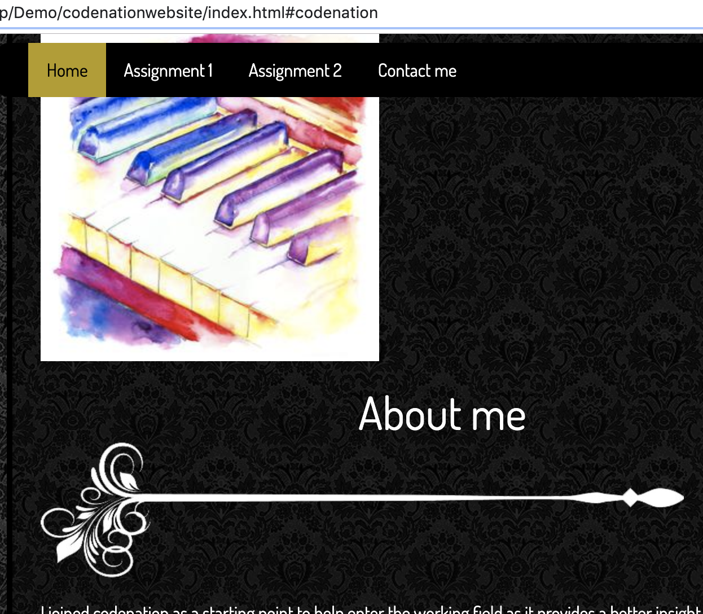

Technology is unavoidable in our everyday lives whether it is direct use of a computer or technology used to make the products we consume or use, and modern businesses are no exception. The range of its purpose can vary greatly as businesses will have different tasks however there are global uses for technology that businesses may use such as hosting a website and using e-mail. These are important for businesses as a site would allow a business to showcase product, advertise or display certain information that would benefit them by increasing sales, awareness, create an online presence and to keep up a certain image. E-mail is crucial as it allows communication not just with customers but within the business itself with employees, it is necessary for customers and employees to be able to contact each other to ensure any problems or questions can be answered quickly and efficient which could help the business secure a sale or prevent a problem with a current service with a customer, good communication also aids in creating a better public image.
Files and data are now usually digitized rather than relying on paper storage as it is much more convenient this way, it saves physical space, easily accessible and shareable, and it creates a level of security as a computer or file with a password can be safer than a file in a cabinet. A file in a cabinet is more at risk of damage and theft however a digital file can be recovered and backed up much more easily off-site. This adds value as important data such as customer details or sales/transactions won't be lost as that could result in loss of money, clients and reputation damage.
Firstly, what is a digital project? Generally speaking, a digital project is a project that is aided by the use of technology for electronic publications. Now how would you make a successful digital project? Before getting to work with a project the best way to minimize problems in the future and such would be to ensure proper planning and analysis is carried out, research is the fundamental key in any type of project, this can mean to look at the project’s purpose; Is the idea validated? Is it reasonable/possible to create and will its function be necessary? Regardless of whether you are working with a team or alone you will need to set clear goals and objectives so that stages such as development run smoothly, one effective method is to use the Kanban method with assistance of communication technology such as Trello as it provides an organised online work board for prioritizing and assigning tasks to group members or yourself. Depending on whether you are working with a team or developing a project for a client, communication tools will be a must as constant communication keeps the project in the right direction and updated with any progress or issues. Once completed, for the project to be successful it will have kept close to the goal and so carrying out it’s main function. It will, however, need to perform well to where the client or the users (most of them) are pleased which can be done by a testing phase ensuring everything is running well, which will include minimizing risks.
As mentioned in the methods to creating a successful project (e.g website) requires appropriate planning. Applying Kanban principles on a trello board you can create an online environment that allows efficient, methodical and organized completing of tasks. You can prioritize which tasks need to be completed first, put them into categories and assign them if there is more than one person working on the project. Provided is a link to my trello board which is being used for creating this website you are currently viewing. I have used colouring for priority to establish what needs to be done first before continuing with other tasks, working creates a pathway to fluently move forward with the project rather than stopping and going back in a disorderly way. https://trello.com/b/4dsQw7Vd/mywebsite
A lot of the risks that apply to non-digital projects also have the same effect on digital projects such as cost, time, copyright, however, the main risks specific to digital ones can include risks such as technological failure and cyber vulnerabilities. In my past points, I mentioned using tools such as trello to help manage the product however if the site were to go down for maintenance or for any other reason then the project may be put to a halt as members can’t check for updates or tasks. The same issue could apply for any communication or hosting tool being used, a way to minimise this risk would be to create multiple backups on local machines and other hosting sites so there is always availability even if your connection to the internet failed. The other main risk is security, in this case, cybersecurity can be a concern if your files and data is stored online as there is always risk of a hacker gaining access and carrying out any number of tasks; this can be a difficult thing to avoid but there are standard procedures that can be taken to reduce the likeliness of this happening by making it difficult for anyone to get access, such as using secure passwords and only sharing the links (e.g. for trello board) to project members.
Selecting the right technology for a job can be a task itself which depends greatly on what the job it is that you require to be done. Other affecting factors are factors such as price, time, how often will it need to be accessed, and how complex the tasks for the job are. When taking all these into consideration the right technology won't have unnecessary features which could end up driving the price which may not be feasible for a project with a small budget. A lot of projects and works are utilizing cloud-based software such as google docs because it is easily accessible by everyone at any time, updates are made in real time so no one will be viewing/editing old copies.
My project is to create an online website using html and css, understanding the method and skills to make a project successful I carried out research and utilised technology such as Trello. Trello aided greatly with the organization and clearly defining what tasks need to be done which covers the planning stage. Github has helped a lot with the project primarily by being online based, once my work had been uploaded it is accessible from anywhere so I never felt locked to one machine and allowed me to continue my work while working at home.This may not have affected me directly but thinking from a team project’s perspective Github will be helpful as it will allow team members to share work easily and keep the project up to date so team members will always have up to date copies and anytime a person makes changes they can make a comment to indicate the changes they have made.
GDPR: What is it? General data protection regulation, it is a set of rules used to regulate laws that revolve around security and privacy about personal data. The main ways this would affect a digital product is when the project stores personal information, specifically european’s data. The regulation is that you must have a good reason for storing data which includes description on the nature, scope, context and the purposes of processing. Identify risks that would put the data at jeopardy and ensure all possible actions for safe storage is carried out. [1] [2] Another big issue that can apply especially to digital projects would be copyright. Copyright act is a protection means that protects original content from being used without proper permissions and licenses. This is so no work is stolen and so adding to the offence of plagiarism. To avoid copyright infringement, it is best to be cautious when it comes to using another person’s work. Proper referencing should be done, quotations marks for direct usage and a reference link even if the information is paraphrased. This includes media such as art, music and video.
During the reviewing stage, I made small changes that mostly were visual changes, for example, the background image. Though the original light colour tile was nice, it didn’t allow for a large enough contrast so I edited it using a image editing software (paint.net) to create a darker version which looked much better. The main tools I used to create the website were mainly VS code and Trello for planning/organising, both played a strong part with the development of the site. Trello helped keep the outcomes and task management organised and effective while VS code was used as the developing platform where I created the site. I found VS code to be very easy to use and helped greatly with spotting errors and syntax structure, it allowed a reduced time of debugging. If however a problem was found it could be logged as a card on Trello for me to address at a later time if I couldn’t currently solve the problem, while away from the main machine I used CodePen as another tool to allow me to code and try out features to be added, this also includes the point I mentioned earlier, I can look through my trello board for issues that need to be solved and try to do so in CodePen. I am satisfied with my final project, it meets every criterion that was set and performs every task which I had planned for it. It contains every function and feature such as using ID within the html page and creating classes in css. I asked peers to test my site to gain any valuable criticism and their reviews, I only received positive feedback so there is not a great deal for me to mention here on that however, I believe with a larger test group I would have been able to find issues that people would believe that I could improve on. There are features I would like to have implemented had the constraints on the project not been as limiting such as work time and classroom learning, I would have liked to incorporate more javascript code into the website to run functions such as text to speech which would aid the visually impaired. However like I mentioned, I believe I managed to meet all the requirements as I matched my outcomes on Trello to the requirements. It is not perfect however, and there is always room for improvement; If even more attention was paid to Trello time management would be more in check, under the the terms of looking for ways to improve visibility and awareness. [3]
As touched upon above, the IT tools I used had many benefits such as ease, accessibility and user-friendliness. One other other tool I used was github, this was for making the site live and visible from any device, this allowed for remote testing and to ensure the site features such as images are being displayed rather than just it being displayed on the local machine. There are more methods than just using Trello, after researching a little on TDD I can incorporate principles into developing my website and making it efficient.
What is TDD?
“TDD can be defined as a programming practice that instructs developers to write new code only if an automated test has failed. This avoids duplication of code. TDD means “Test Driven Development”. The primary goal of TDD is to make the code clearer, simple and bug-free.” [4]
With this in mind, to make it more efficient I can use a constant testing principle and create a dynamic evolving and ever changing test plan which consists of me testing every function/line of code i write as soon as I write it to spot a fault/error immediately rather than later on. This saves time, creates a better time management as the testing stage at the end will have less pressure placed on it especially if a major problem was thwarted early on rather than having to deal with it at the end of the project, this is efficient.
A website in teams? I do believe it would be more efficient to work as a team solely based on the amount of work that can be done, considering everyone is efficient and on the same page when it comes to the content, otherwise there could be issues in one member’s work that could prevent progress of the group. Considering the website I worked on was not a large scale project it would have not made a large difference to work in a team, if anything I think efficiency would have been hindered as mentioned in the problem of messages, and points being clear enough for everyone to understand and also their coding methods could actively collide with the different style another user works on which will not allow for peer assistance.
While the TDD style testing method is useful throughout the development phase I will still need to do a final test which I will three different tests, the first test which I ran was the main testing of the site functions.
| Test # | Test description | Expected outcome | Evidence | Actual outcome |
|---|---|---|---|---|
| 1 | To check if the hover style works when I hover over the button | Button turns into a transparent glow | Test as expected | |
| 2 | To check if the divider image displays correctly and an appropriate size | For it to display correctly and the size to fit well within the wrapper | Test as expected | |
| 3 | To make sure the navbar follows the page when you scroll down | For it remain fixed at the top of the page | Test as expected | |
| 4 | To test the “jump links” are all working in order | For me to be redirected further down the page |  | Test as expected |